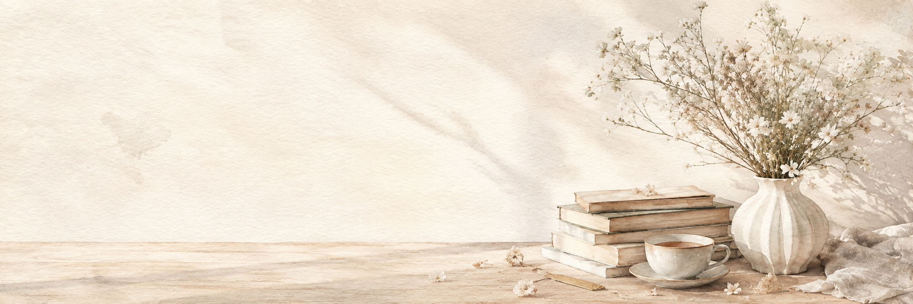

Закладки
Сохраняйте любимые истории и возвращайтесь к нужным страницам.
Закладки — Новеллы
Собрано с ваших полок «Читаю», «Буду читать» и «Отложено». Все полки
Здесь появятся новеллы, которые вы читаете или собираетесь прочитать. Отметьте их на странице новеллы — «Читаю» тоже ставится само, когда вы открываете главу.
Закладки — Страницы
Места в тексте, куда вы хотели вернуться.
Пока нет сохранённых страниц. Нажмите «Закладка» в читалке или выделите отрывок и выберите «Закладка».
Иногда самые важные моменты — это не главы, а строчки, которые остаются с нами.